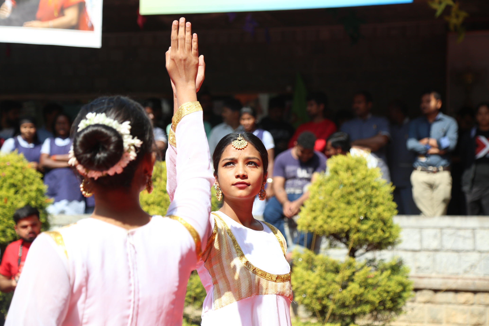

Dance
Bother: Mitchell Monica Bilung
mitchell.monica20@iimb.ac.in
9631086665
Footloose
Details
Register

Duet Danza
Details
Register
Get Set Solo
Details
Register
War of Superstars
Details
Register
Rules and Regulations
×